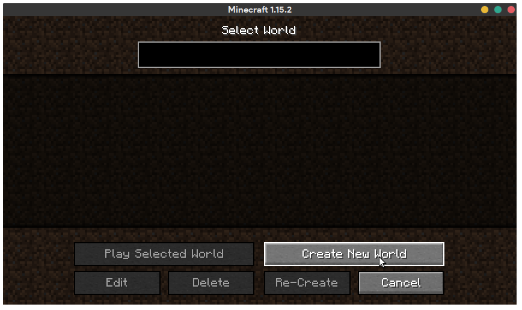
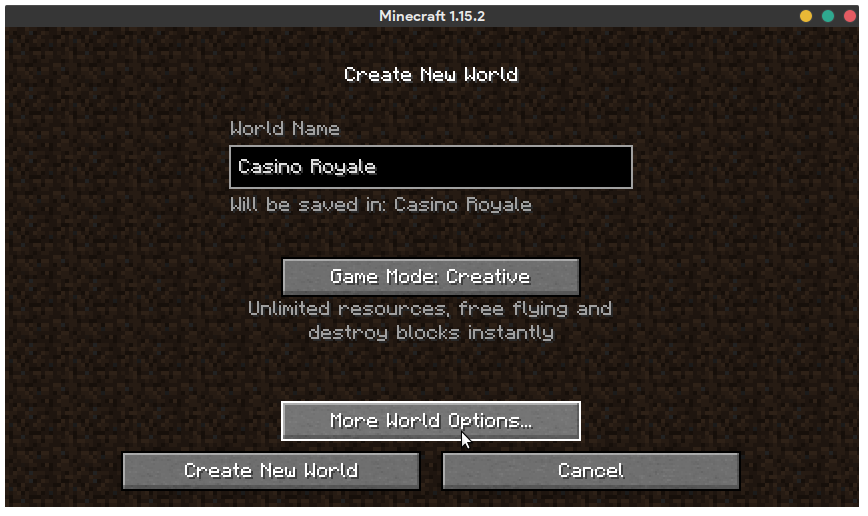
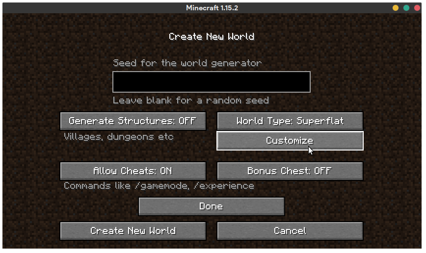
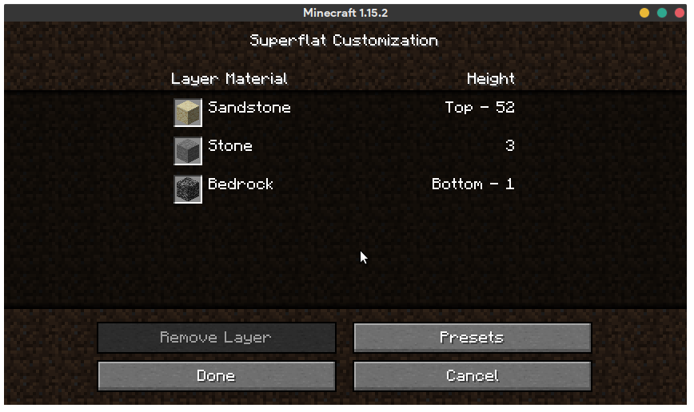
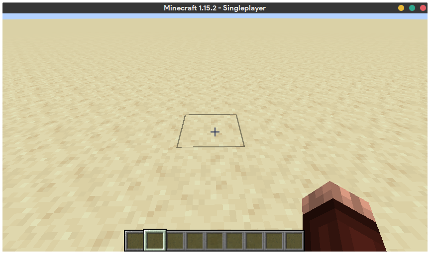
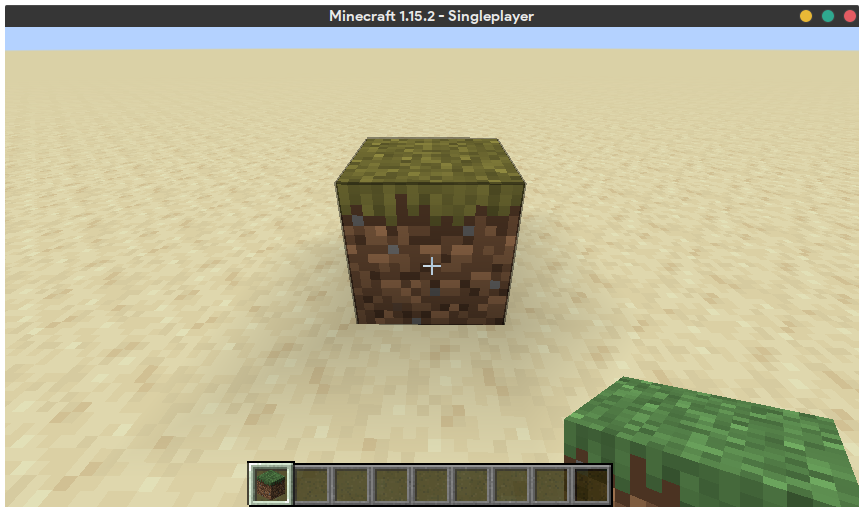
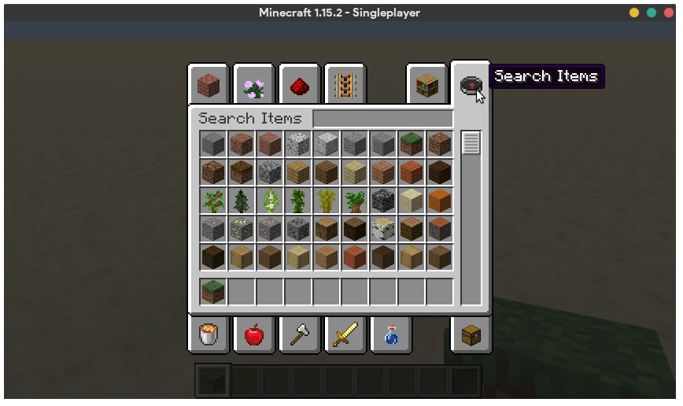

This section details world creation in 389E and controls for Minecraft.
First and foremost, when you boot up your copy of Minecraft specific to 389E, you should see an option to create a new world when you click Singleplayer. Don't worry about Multiplayer for now- you'll receive instructions in class to get whitelisted for and join the class servers.
If you're experienced with Minecraft already, this section essentially shows you how to create superflat worlds with the 'redstone ready' preset.
Upon clicking 'create world', there are a few configurations we make in order to make our worlds a lot easier for us to work with. In order to optimize our game worlds for engineering purposes, go ahead and click the 'More World Options' button.
Here, you'll want to change a few things. First, make sure to set Generate Structures to off. We don't want any villages or desert temples to be randomly generated. We also want to make sure cheats are enabled (in case you want to leverage a little more control over your world). Finally, make sure bonus chest is disabled. We have no need for a chest of bonus items in creative mode.
No need to fill out a seed; all superflat worlds look the same. Next, click the 'customize' button. Click the 'presets' button, and select the 'Redstone Ready' preset. After you do this, the Superflat Customization tab will look like the following.
Congratulations, your world is now optimized for redstone building! This is generally how we expect you to start projects from scratch.
Minecraft is played from a first-person point of view. If you aren't familiar with that, the best way to get familiar with that is to drop yourself into the game and give it a try right off the bat. You'll find that you'll be able to use your mouse to look around and the W, A, S, and D keys to move forward, left, backwards and right, respectively.
As we will be leveraging Minecraft's creative mode, it's important to note that the spacebar is the default key that allows you to jump, and double tapping it while on the ground will allow your character to 'fly'. This gives you a higher degree of freedom than regular walking, and is essential to our builds.
If you are walking, however, the shift key allows you to crouch, which prevents you from falling off of the block that you are currently on.
We recommend that for this course, you familiarize yourself with flight in Minecraft, as it's an excellent idea to analyze your structures from a distance.
Aside from general movement in-game, it's important to learn how to mess with blocks in-game. That is, you need to learn how to get ahold of the blocks you want (we're mainly interested in the circuitry stuff), place them as you wish, and because you're human (probably), you'll want to learn how to remove blocks that you may place by mistake.
At the bottom of your screen, you'll see the 'hotbar'. This contains a bunch of blocks that you can quickly access at a single moment. By using the scroll wheel or the number keys (0 through 9), you can cycle through the items in your hotbar. Whatever block you've selected in your hotbar will be the one you'll place. Here, you can see the hotbar is empty.
To place blocks, aim your pointer at a location which already has a block, and right click. Minecraft has a simple rule: blocks can only be initially placed attached to another block. This doesn't mean that blocks cannot be isolated from other blocks, you can simply remove a block's connection to other blocks after you place it. This might sound confusing in words, but I encourage you to load up a world and place a few blocks to give it a try. Let's assume that the hotbar has a 'grass block' item in it. We can place it with a right click.
To remove blocks, left click one when you are in range. It's important that you're close enough to the block to remove it, otherwise it won't delete itself.
Your selection is not limited to just your hotbar. In order to access Minecraft's full collection of blocks, you can press e to open up the creative mode inventory menu.
From here, you can click and drag whatever blocks you'd like from the creative mode menu into your hotbar. The easiest way to do this is the click the magnifying class icon and perform a search for the items you'd like.
Feel free to experiment with movement, as well as with placing and removing blocks. Whether this game is totally new to you or you have prior experience with it, it's good to get familiar with the controls again.